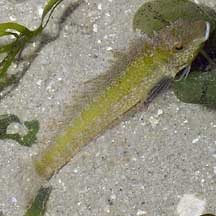
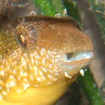
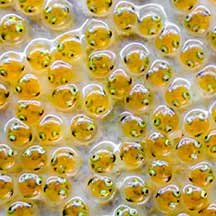
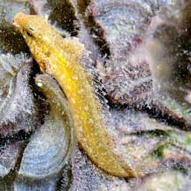
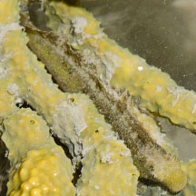
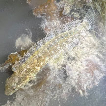
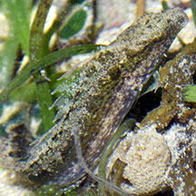
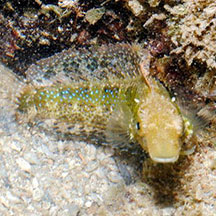

|
|
| fishes text index | photo index |
| Phylum Chordata > Subphylum Vertebrate > fishes > Family Blennidae |
| Variable
fang-blenny Petroscirtes variabilis Family Blenniidae updated Sep 2020 Where seen? This small elongated fish is sometimes encountered on our Southern shores, among seagrasses and seaweeds. Sometimes seen hiding in large snail shells, fan clam shells and litter, where it appears to be guarding eggs laid on the hard surface. Features: Those seen 5-7cm long, grows up to 15cm. Body elongated flattened sideways, snout blunt squarish. Lower jaw has a pair of long curved fangs. It lacks scales. Dorsal fin continuous along the body length which it holds up rather handsomely when alarmed. Colours usually a dull olive green with pale markings, some brighter green. Underside yellow. Six large irregular dark blotches along upper side. Males are orange-brown while females are sea-green above and lighter below. |
 Pulau Semakau, Dec 05 |
 Changi, Jul 07 |
 Pair of long curved fangs on lower jaw. Cyrene Reef, May 08 |
| What does it eat? According to FishBase, it eats mainly small crustaceans and occasionally nips off scales from other fishes. According to Kuiter, it scrapes algae off broad seagrasses. |
|
| Blenny babies: It lays adhesive eggs. It has been seen to guard eggs laid inside empty Fan shell clams and other large empty snail shells. Once, a pair were seen with the eggs. |
|
 Close up of the eggs: about to hatch?! |
||
 Guarding eggs laid inside a large snail shell. Pulau Pawai, Dec 09 |
||
| Variable fang-blennies on Singapore shores |
On wildsingapore
flickr
|
| Other sightings on Singapore shores |
 Kusu Island, May 22 Photo shared by Benny Cheong on facebook. |
||
 Big Sisters Island, Jan 20 Photo shared by Rene Ong on facebook. |
 Pulau Hantu, Dec 25 Photo shared by Kelvin Yong on facebook. |
 Cyrene, Sep 20 Photo shared by Loh Kok Sheng on facebook. |
 Terumbu Semakau, Apr 13 Photo shared by Loh Kok Sheng on flickr. |
||
Links
References
|